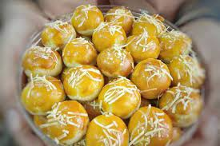

Resep kue nastar

bahan - bahan :
- 250 gr tepung terigu
- 175 gr butter/mentega dingin dari kulkas
- 2 buah telur
- 45 gr gula halus
- Sedikit susu cair/air (opsional)
Langkah langkah :
-
Apabila kamu membuat selai nanas sendiri, pastikan sampai selai dingin atau simpan dikulkas terlebih dahulu

-
Bulatkan dahulu selai nanas untuk mempermudah nanti membulatkan nastar

-
Mixer butter (masih dingin dari kulkas) kemudian masukan gula halus sedikit demi sedikit lalu 1 kuning telur tidak usah terlalu lama asal semua sudah tercampur rata

-
Masukan terigu sedikit demi sedikit sampai tepung habis sambil disaring kemudian aduk dengan spatula dan uleni dengan tangan sampai kalis basah

-
Ambil adonan nastar besarnya disesuaikan dengan besar bulatan selai nanas yang sudah disiapkan sebelumnya, pipihkan kemudian isi dengan selai dan bulatkan dengan tangan usahakan selai tertutup adonan merata, ulangi sampai adonan habis taruh dalam loyang yg sudah diolesi tipis minyak/butter/backpaper

-
Teflon : olesi tipis teflon dengan minyak atau butter, taruh nastar diatasnya tutup rapat dan masak dengan api kecil sampai warna nya cantik
-
Oven : Panaskan oven 165 derajat Celsius, masukan loyang. Setelah 15 menit keluarkan nastar kemudian olesi lagi dengn kuning telur supaya hasilnya cantik dan masukan lagi ke dalam oven selama 15 menit. Total sekitar 30 menit. Jika warnanya sudah cantik kelurkan nastar dari oven dan biarkan dulu sampai dingin

-
Keluarkan dari oven/teflon dan tunggu dulu sampai dingin sebelum dihidangkan atau dimasukan toples

-
Selamat mencoba :)